ÜLKELER-BAŞKENTLER-BÖLGELER-BAYRAKLAR
Fitrelemek istediğiniz ülkenin başkentini giriniz:
| NAME | CAPITAL | REGION | FLAG |
|---|---|---|---|
| Afganistan | Kâbil | Asya |  |
| Almanya | Berlin | Avrupa |  |
| Amerika Birleşik Devletleri | Washington, DC | Kuzey Amerika | |
| Andorra | Andorra la Vella | Batı Avrupa | |
| Angola | Luanda | Güneybatı Afrika | |
| Antigua ve Barbuda | St John | Karayipler | 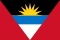 |
| Arjantin | Buenos Aires | Güney Amerika | |
| Arnavutluk | Tiran | Balkanlar | |
| Avustralya | Canberra | Okyanusya | |
| Avusturya | Viyana | Orta Avrupa | |
| Azerbaycan | Bakü | Kafkasya | |
| Bahamalar | Nassau | Karayipler | |
| Bahreyn | Manama | Basra Körfezi | |
| Bangladeş | Dhaka | Orta Asya | |
| Barbados | Bridgetown | Karayipler | |
| Batı Sahra | Laayoune | Batı Sahra | 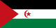 |
| Belçika | Brüksel | Orta Avrupa | |
| Belize | Belmopan | Kuzey Amerika | |
| Benin | Porto- Novo | Batı Afrika | |
| Beyaz Rusya | Minsk | Avrupa | |
| Bhutan | Thimphu | Hint Anakarası | |
| Birleşik Arap Emirlikleri | Abu Dabi | Arap Yarımadası | |
| Birleşik Krallık | Londra | Kuzey Batı Avrupa | |
| Bolivya | Sucre | Güney Amerika | |
| Bosna-Hersek | Saraybosna | Balkanlar | |
| Botsvana | Gaborone | Güney Afrika | |
| Brezilya | Brezilya | Güney Amerika | |
| Brunei | Bandar Seri Begawan | Borneo Adası | |
| Bulgaristan | Sofya | Balkanlar | |
| Burkina Faso | Ouagadougou | Batı Afrika | 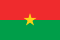 |
| Burundi | Bujumbura | Orta Afrika | |
| Cezayir | Cezayir | Kuzey Afrika | 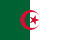 |
| Cibuti | Cibuti | Doğu Afrika | |
| Cook Adaları | Avarua | Okyanusya | |
| Çad | N’Djamena | Orta Afrika | |
| Çek Cumhuriyeti | Prag | Doğu Avrupa | |
| Çin Cumhuriyeti | Taipei | Doğu Asya | |
| Çin Halk Cumhuriyeti | Pekin | Doğu Asya | |
| Danimarka | Kopenhag | İskandinavya | |
| Doğu Timor | Dili | Güneydoğu Asya | |
| Dominik Cumhuriyeti | Santo Domingo | Karayip | 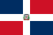 |
| Dominika | Roseau | Karayip | |
| Ekvador | Quito | Güney Amerika | |
| Ekvator Ginesi | Malabo | Orta Afrika | |
| El Salvador | San Salvador | Orta Amerika | |
| Endonezya | Jakarta | Güneydoğu Asya | |
| Eritre | Asmara | Doğu Afrika | 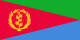 |
| Ermenistan | Yerevan | Kafkasya | 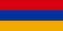 |
| Estonya | Tallinn | Baltık Ülkesi | |
| Etiyopya | Addis Ababa | Doğu Afrika | 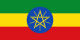 |
| Fas | Rabat | Kuzay Afrika | 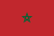 |
| Fiji | Suva | Pasifik | |
| Fildişi Sahili | Yamoussoukro | Batı Afrika | |
| Filipinler | Manila | Güney Asya | |
| Finlandiya | Helsinki | İskandinavya | |
| Fransa | Paris | Orta Avrupa | |
| Gabon | Libreville | Orta Afrika | |
| Gambiya | Banjul | Batı Afrika | |
| Gana | Accra | Batı Afrika | |
| Gine | Conakry | Batı Afrika | |
| Gine-Bissau | Bissau | Batı Afrika | |
| Grenada | St George’s | Karayipler | 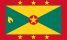 |
| Guatemala | Guatemala City | Orta Amerika | |
| Guyana | Georgetown | Güney Amerika | |
| Güney Afrika Cumhuriyeti | Pretoria | Güney Afrika | |
| Güney Kore | Seul | Uzakdoğu | |
| Güney Sudan | Cuba | Orta Afrika | |
| Gürcistan | Tiflis | Kafkasya | |
| Haiti | Port-au -Prince | Karayipler | |
| Hırvatistan | Zagreb | Balkanlar | |
| Hindistan | Yeni Delhi | Hint Anakarası | |
| Hollanda | Amsterdam | Batı Avrupa | |
| Honduras | Tegucigalpa | Orta Amerika | |
| Irak | Bağdat | Orta Doğu | |
| İran | Tahran | Orta Doğu | |
| İrlanda | Dublin | Batı Avrupa | |
| İspanya | Madrid | İber Yarımadası | |
| İsrail | Tel Aviv | Orta Doğu | |
| İsveç | Stockholm | İskandinavya | |
| İsviçre | Bern | Orta Avrupa | |
| İtalya | Roma | Güney Avrupa | |
| İzlanda | Reykjavik | Kuzey Avrupa | |
| Jamaika | Kingston | Karayipler | |
| Japonya | Tokyo | Uzakdoğu | |
| Kamboçya | Phnom Penh | Doğu Asya | |
| Kamerun | Yaoundé | Orta Afrika | |
| Kanada | Ottawa | Kuzey Amerika | |
| Karadağ | Podgorica | Balkanlar | 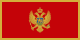 |
| Katar | Doha | Balkanlar | |
| Kazakistan | Astana | Orta Asya | |
| Kenya | Nairobi | Doğu Afrika | |
| Kıbrıs Cumhuriyeti | Nicosia | Akdeniz | |
| Kırgızistan | Bişkek | Orta Asya | |
| Kiribati | Bairiki | Pasifik | |
| Kolombiya | Bogota | Güney Amerika | |
| Komorlar | Moroni | Hint Okyanusu | 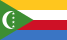 |
| Kongo Cumhuriyeti | Brazzaville | Orta Afrika | |
| Kosova | Priştine | Balkanlar | |
| Kosta Rika | San José | Orta Amerika | |
| Kuveyt | Kuveyt | Orta Doğu | |
| Kuzey Kore | Pyongyang ( P’yŏngyang ) | Uzakdoğu | |
| Küba | Havana | Karayipler | |
| Laos | Vientiane | Güneydoğu Asya | |
| Lesotho | Maseru | Güney Afrika | |
| Letonya | Riga | Doğu Avrupa | |
| Liberya | Monrovia | Batı Afrika | |
| Libya | Tripoli | Kuzey Afrika | |
| Lihtenştayn | Vaduz | Orta Avrupa | |
| Litvanya | Vilnius | Doğu Avrupa | |
| Lübnan | Beyrut | Orta Doğu | |
| Lüksemburg | Lüksemburg | Batı Avrupa | |
| Macaristan | Budapeşte | Orta Avrupa | |
| Madagaskar | Antananarivo | Güneydoğu Afrika | 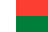 |
| Makedonya | Üsküp | Balkanlar | |
| Malavi | Lilongwe | Afrika | |
| Maldivler | Male | Hint Yarımadası | |
| Malezya | Kuala Lumpur | Güneydoğu Asya | |
| Mali | Bamako | Batı Afrika | |
| Malta | Valletta | Akdeniz | |
| Marshall Adaları | Majuro | Pasifik | |
| Mauritius | Port Louis | Hint Okyanusu | |
| Meksika | Meksiko | Orta Amerika | |
| Mısır | Kahire | Kuzey Afrika | |
| Mikronezya | Palikir | Pasifik | |
| Moğolistan | Ulan Batur | Orta Asya | |
| Moldova | Chisinau | Doğu Avrupa | |
| Monako | Monako | Batı Avrupa | |
| Moritanya | Nouakchott | Batı Afrika | |
| Mozambik | Maputo | Güneydoğu Afrika | 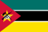 |
| Myanmar | Naypyidaw | Güneydoğu Asya | |
| Namibya | Windhoek | Güneybatı Afrika | |
| Nauru | Yaren | Pasifik | |
| Nepal | Katmandu | Kuzey Hindistan | |
| Nijer | Niamey | Batı Afrika | |
| Nijerya | Abuja | Afrika | |
| Nikaragua | Managua | Orta Amerika | |
| Norveç | Oslo | Kuzey Avrupa | |
| Orta Afrika Cumhuriyeti | Bangui | Afrika | 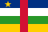 |
| Özbekistan | Taşkent | Orta Asya | 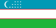 |
| Pakistan | İslamabad | Orta Asya | |
| Palau | Ngerulmud | Kuzey Pasifik | |
| Panama | Panama City | Orta Amerika | |
| Papua Yeni Gine | Port Moresby | Doğu Yeni Gine Adası | |
| Paraguay | Asunción | Güney Amerika | |
| Peru | Lima | Güney Amerika | |
| Polonya | Varşova | Doğu Avrupa | |
| Portekiz | Lizbon | Güney Avrupa | |
| Romanya | Bükreş | Balkanla | |
| Ruanda | Kigali | Orta Afrika | |
| Rusya | Moskova | Avrupa | |
| Saint Kitts ve Nevis | Basseterre | Karayipler | |
| Saint Lucia | Castries | Karayipler | |
| Saint Vincent ve Grenadinler | Kingstown | Karayipler | |
| Samoa | Apia | Pasifik | |
| San Marino | San Marino | Orta Avrupa | 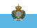 |
| São Tomé ve Príncipe | Sao Tome | Atlas Okyanusu | |
| Senegal | Dakar | Afrika | |
| Seyşeller | Victoria | Batı Hint Okyanusu | |
| Sırbistan | Belgrat | Balkanlar | |
| Sierra Leone | Freetown | Batı Afrika | |
| Singapur | Singapur | Asya | |
| Slovakya | Bratislava | Orta Avrupa | |
| Slovenya | Ljubljana | Orta Avrupa | |
| Solomon Adaları | Honiara | Pasifik | |
| Somali | Mogadişu | Afrika | |
| Sri Lanka | Colombo | Seylan adası | |
| Sudan | Hartum | Afrika | |
| Surinam | Paramaribo | Güney Amerika | |
| Suriye | Şam | Orta Doğu | |
| Suudi Arabistan | Riyad | Arap Yarımadası | |
| Svaziland | Mbabane | Afrika | |
| Şili | Santiago | Güney Amerika | |
| Tacikistan | Duşanbe | Orta Asya | |
| Tanzanya | Dodoma | Doğu Afrika | |
| Tayland | Bangkok | Uzakdoğu | |
| Togo | Lomé | Batı Afrika | |
| Tonga | Nuku’alofa | Pasifik | |
| Trinidad ve Tobago | Port of Spain | Karayipler |  |
| Tunus | Tunus | Kuzeybatı Afrika |  |
| Tuvalu | Funafuti | Pasifik |  |
| Türkiye | Ankara | Avrupa-Asya |  |
| Türkmenistan | Aşkabat | Orta Asya |  |
| Uganda | Kampala | Afrika |  |
| Ukrayna | Kiev | Doğu Avrupa |  |
| Umman | Maskat | Arap Yarımadası |  |
| Uruguay | Montevideo | Güney Amerika |  |
| Ürdün | Amman | Orta Doğu |  |
| Vanuatu | Port Vila | Pasifik |  |
| Vatikan | Vatikan | Güney Avrupa |  |
| Venezuela | Karakas | Güney Amerika |  |
| Vietnam | Hanoi | Asya |  |
| Yemen | Sanaa | Arap Yarımadası | |
| Yeni Zelanda | Wellington | Okyanusya | |
| Yeşil Burun Adaları | Praia | Afrika | |
| Yunanistan | Atina | Güneydoğu Avrupa | |
| Zambiya | Lusaka | Afrika | |
| Zimbabve | Harare | Afrika |